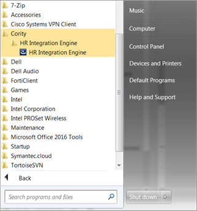
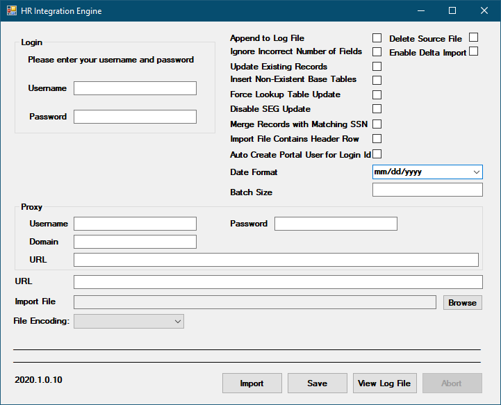

| Field | Description |
| Login Username | The Cority user name you want to use for running the HR Integration Utility. Note: The security you must define for this user is described after this table. |
| Login Password | The Cority user password with which you want to run the HR Integration Utility. The password is encrypted before being saved to the ini file. The encryption depends on a key that is user/machine specific. This means that one user cannot decrypt the password from an ini created by another user. This is important to keep in mind when configuring the HR Integration Utility to run automatically/silently. |
| URL | The URL of your Cority application. |
| Proxy Username | The user name used when connecting to the web proxy. |
| Proxy Domain | The domain used when connecting to the web proxy. |
| Proxy Password | The password used when connecting to the web proxy. The password is encrypted before it is saved to the ini file. The encryption depends on a key that is user/machine specific. This means that one user cannot decrypt the password from an ini created by another user. This is important to keep in mind when configuring the HR Integration Utility to run automatically/silently. |
| Proxy URL | The URL of the web proxy. |
| Import File | The filename of a comma-delimited file that contains the data you want to import into Cority. The name of this file should match the URL of your application. If it doesn’t, the HR Integration Utility will generate an error on import. |
| Append to Log File | Whether to overwrite the existing log file or to append. |
| Ignore Incorrect number of fields | Ignores the number of fields coming from the import file. If there are more fields than the import format, they are ignored. If there are fewer fields, the missing fields are considered null. |
| Update Existing Records | If selected, and the employee number on the record is found within the system, the employee data will be replaced with the data from the file. If not selected, it will not get updated and the entire record will error. |
| Insert Non-Existent Base Tables | If selected, look-up table codes that exist in your file but do not exist in Cority will be added automatically. If not selected and a look-up table value exists in your file that does not exist in Cority, the entire record will error and the employee data will not get updated. |
| Force Base Table Update | If selected, and there exists a description for a look-up table code in your file that differs from what is in Cority, the code will be updated with this new description. If not selected, the description in Cority will remain the same; the value will not be taken from the file. Beyond the description, this could include any other field related to a specific look-up table code (Shift Begins and Shift Duration, for example). |
| Disable HEG Update | If selected, SEGs will be updated based on their GDDLOFB settings—adding employees to the file that have matching GDDLOFB. Any employees in your file who belong to a SEG within Cority that do not correspond to the GDDLOFB of the SEG will automatically be end-dated and removed from the SEG. |
| Merge Records with Matching SSN | If selected, and you have an employee name in your file that does not exist in Cority but has the same SSN as an existing employee in Cority, the two will be merged using the new employee name and all related records will become related to the new employee. The original employee reference will be removed from Cority. To ensure that the “Full Name and Number” column in Cority is updated accordingly, “First Name” and “Last Name” must exist in your file. |
| Date Format | The date format used in the import file. |
| Import File Contains Header Row | Specifies if the import file contains the header row with column names. If this is selected, the first row will be ignored in the import. |
| Delete Source File | If selected, the import file will be deleted after it is successfully imported. |
| Enable Delta Import | If selected, the next successfully imported file will be saved with a “previous” suffix, and on subsequent imports, only the deltas (added or updated records) will be imported, instead of the entire file being imported each time. |
| Auto Create Portal User for Login Id | If selected, a Portal/myCority user will be created with the contents of the LoginId field in your data file. The new will have the ‘Portal Only’ checkbox selected in their user profile as well as the Portal role. They will be linked to the Employee Id on the User Record and if the ‘Portal/myCority Authentication Method’ system setting is set to ‘Application Username and Password’, the user will have the email address of the linked employee. In order for the HR Integration Utility to create a Portal/myCority user, the 'employee date terminated' value in the import file must be null or occur after the current date. Also, the Portal/myCority license user count limit must not be exceeded and the ‘Login Id’ must not already exist. Lastly, the employee must not already be associated with a Portal/myCority user. |
| File Encoding | This enables you to specify the format of your file. UTF-8 is recommended for special characters like names or words that contain accents. |
Once you have finished entering your settings and clicked Import, the settings will be saved for future imports. The configuration file (HR Integration Utility.ini) will be saved in the same directory as the HR Integration Utility.exe file. By default, the path is C:\Program Files (x86)\Cority\HR Integration Utility.ini. As mentioned earlier in the guide, your import format can be added to this configuration file to override the import format set in the Cority Import Utility.